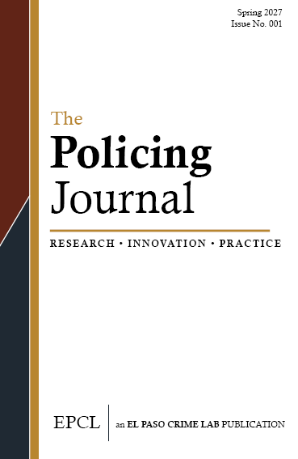
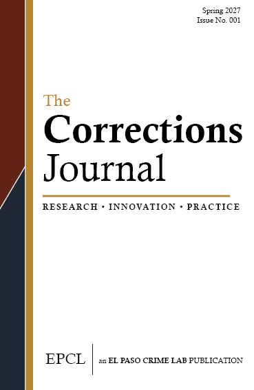
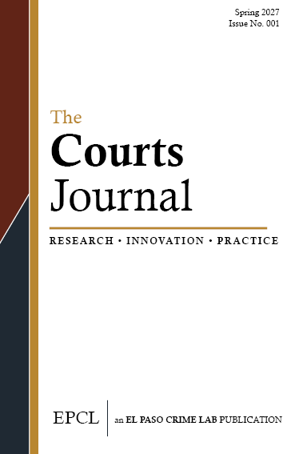
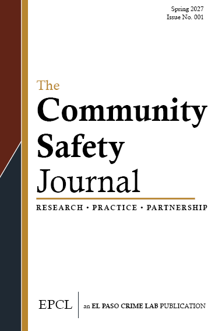

Journal Submissions
Contributing to the science and practice of criminal justice
Advancing knowledge. Improving practice.
EPCL publications bring together researchers, criminal justice professionals, educators, and students to examine important issues, communicate evidence, and share ideas that move the field forward.
Whether you work in criminal justice, study it, or are interested in improving it, there is a place for your contribution.
Our Publications
Four publications. Four areas of focus. One shared commitment to advancing the science and practice of criminal justice.
Select a publication to explore its subject matter and determine where your proposed contribution belongs.

The Policing Journal
Examining policing, police organizations, leadership, officer development, and evidence-based approaches to public safety.
Areas of interest
Police management · Problem-oriented policing · Organizational culture · Officer training · Crime analysis · Accountability · Police-community relationships

The Corrections Journal
Examining correctional institutions, detention, incarceration, rehabilitation, reentry, and correctional administration.
Areas of interest
Institutional management · Correctional officer development · Rehabilitation · Inmate programming · Recidivism · Reentry · Correctional policy

The Courts Journal
Examining judicial administration, prosecution, defense, adjudication, and the broader administration of justice.
Areas of interest
Court efficiency · Case processing · Judicial decision-making · Diversion · Sentencing · Procedural justice · Access to justice

The Community Safety Journal
Examining public safety beyond traditional criminal justice institutions, including prevention, community partnerships, and local government.
Areas of interest
Crime prevention · Community interventions · Public health approaches · Neighborhood conditions · Local policy · Interagency collaboration
Our editorial philosophy
Meaningful progress requires collaboration between those who study criminal justice and those who work within it.
EPCL seeks contributions that are intellectually rigorous, accessible to professional audiences, and relevant to the communities and institutions served by the criminal justice system.
What Can You Contribute?
EPCL welcomes different forms of professional and scholarly contributions. You do not need to be an academic researcher or have previous publication experience.
Research & Education
Communicating research and expanding professional knowledge.
- Original research
- Literature reviews
- Research summaries
- Educational explainers
- Program evaluations
- Evidence-based practice reviews
- Methodological discussions
Perspectives & Debate
Examining ideas, challenging assumptions, and encouraging informed discussion.
- Policy analyses
- Professional commentary
- Evidence-based opinion essays
- Ethical discussions
- Institutional critiques
- Emerging criminal justice issues
Practice & Experience
Sharing professional knowledge and practical experience.
- Case studies
- Innovative practices
- Implementation experiences
- Lessons from the field
- Professional interviews
- Operational problem-solving
- Agency initiatives
How the Submission Process Works
EPCL uses a proposal-first process. You do not need to prepare a complete manuscript before receiving an initial editorial decision.
Submit a proposal
Choose a publication and contribution category. Describe your proposed topic, its purpose, and its anticipated contribution.
Editorial review
Two editors assigned to the selected publication independently review the proposal for relevance, originality, potential contribution, and suitability.
Receive a decision
You will receive an approval, denial, or request for modification. Approval is an invitation to develop a manuscript, not a guarantee of publication.
Develop your manuscript
Approved contributors receive the universal EPCL manuscript template and submission instructions. The standard development period is 30 days, subject to approved extensions.
Manuscript evaluation
Editors assess the completed manuscript for quality, clarity, accuracy, relevance, and suitability. Revisions may be requested.
Publication preparation
Accepted manuscripts proceed to final editorial preparation and publication.
30 Days Standard manuscript development period
2 Editors Assigned to each publication proposal
$0 Submission fee
Manuscript Preparation
Approved contributors will receive instructions for developing their full manuscripts.
EPCL Universal Manuscript Template
A standardized Microsoft Word template designed for all four EPCL publications and three contribution categories.
Includes:
- Author information and title page.
- Instructions for blinded editorial review.
- Suggested manuscript structures.
- Abstract and keyword sections.
- APA-formatted references.
- Tables, figures, and appendices guidance.
Formatting standard: APA 7th edition · Times New Roman · 12-point · Double-spaced · 1-inch margins.
Submission Guidelines
A few important requirements to understand before submitting your proposal.
Who is eligible to contribute?
EPCL welcomes criminal justice practitioners, researchers, academic faculty, undergraduate and graduate students, administrators, policymakers, retired professionals, and other individuals with relevant knowledge or experience.
Institutional affiliation, academic credentials, and previous publication experience are not prerequisites.
Originality and intellectual property
Contributions should represent original work and must not infringe upon the intellectual property rights of others.
Contributors are responsible for appropriately acknowledging sources. Previously published material, manuscripts under consideration elsewhere, and substantially overlapping submissions must be disclosed.
Professional and ethical standards
Contributors must:
- Properly attribute sources and intellectual contributions.
- Disclose relevant conflicts of interest.
- Identify applicable funding and material support.
- Obtain permissions for copyrighted materials.
- Protect confidential and personally identifiable information.
- Obtain appropriate authorization for research involving human participants when required.
EPCL may request clarification regarding research ethics, institutional approvals, or data permissions.
Manuscript formatting requirements
Full manuscripts must follow APA Publication Manual, Seventh Edition, unless otherwise instructed.
| Element | Requirement |
|---|---|
| Citation style | APA 7th edition |
| Font | Times New Roman, 12-point |
| Spacing | Double-spaced |
| Margins | 1 inch |
| Alignment | Left-aligned |
| Indentation | 0.5 inch |
| Page numbering | Upper-right corner |
| File format | Microsoft Word (.docx) |
Additional publication-specific instructions may be provided by the editorial team.
How does editorial review work?
Proposals are reviewed by two editors assigned to the selected publication.
Completed manuscripts undergo editorial evaluation for relevance, quality, accuracy, clarity, and suitability.
This process should not be interpreted as external, independent scholarly peer review unless a particular publication explicitly identifies it as such.
Does approval guarantee publication?
No. Proposal approval is an invitation to develop a full manuscript. The completed manuscript must undergo editorial evaluation before a final publication decision is made.
Can I submit to multiple publications?
Contributors should select the publication most closely aligned with their subject matter.
If a proposed contribution could reasonably fit multiple publications, indicate this in the proposal description so the editorial team can consider its placement.
Have an idea worth sharing?
The advancement of criminal justice depends on research, professional experience, critical discussion, and the willingness to explore better approaches.
Whether you are a researcher, practitioner, educator, or student, we welcome your perspective.
Start with an idea. We will help guide you through the process.